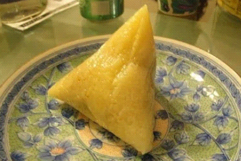
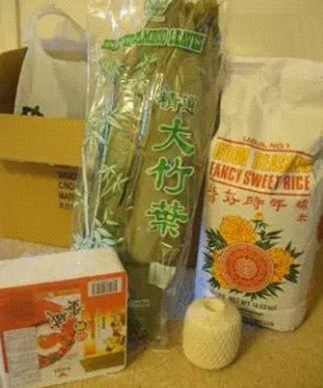
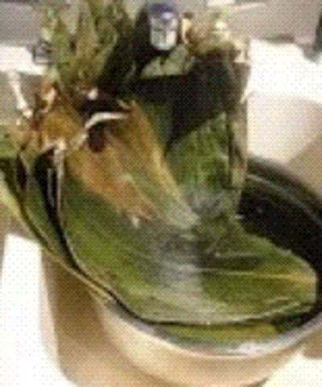
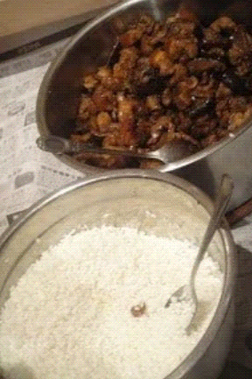
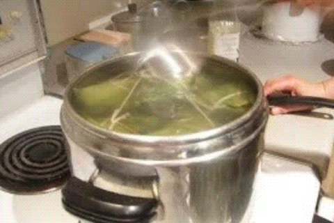
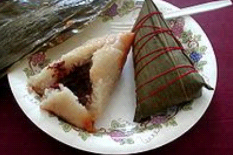

Chinese Rice Dumplings(Zhong Zi)

INGREDIENTS

- 1-3 lb sticky rice
- bamboo leaves as needed (and string)
- 1/6 lb peanuts (optional, as much as you like)
- 0.65g dried miniature shrimp
- 0.65g dried chinese mushroons
- 1/2 lb pork (fatty, belly, whatever... chunked)
- fried shallots as needed
- 2 tablespoons light soy sauce (or more to taste)
- 1 teaspoon rice wine (or to taste)
- 1/2 teaspoon sugar (or brown sugar syrup. DO NOT USE TAIWANESE BLACK SUGAR)
- salt, wine pepper, to taste
- Optional: Salted duck egg, chestnuts, dried minced daikon radish.
- Serve with: Sweet chilli sauce or sweet soy sauce.
COOKING METHOD
- Soak overnight: peanuts, dried chinese mushrooms, dried miniature shrimp.
- Wash bamboo leaves thoroughly and till pliable. Remove stems and leave in bowl with some water to keep moist but
not soak.

- Wash rice thoroughly and rinse 3-4 times. Add 3 teaspoon of salt and mix. Update: soak for at least half an hour
if you are planning to use a pressure cooker, 3 hours to overnight if using a steamer.
- Peel cooked salted duck egg. Remove the white and the membrane around the yolk. Toss with a tablespoon of rice
wine for flavour.
- Heat oil in wok. Add pork chunks and stirfry till fragrant. Remove from heat.

- Add more oil to wok if necessary. Stirfry shrimp and fried shallots, then add mushrooms and stirfru till
fragrant. Add peanuts and mix.
- Add meat, season with soy sauce, rice wine, sugar. Saute rapidly over high heat until boiling (add enough soy
and rice wine so that there is some liquid). Reduce heat to low and simeer for 10 minutes. ALWAYS TASTE and
add more if necessary of any ingredient.
- Take 2 leaves, one larger than the other and opposite end to opposite end. Overlap, with the smaller leaf on the
top, line the edge of the leaves up but with the smaller leaf a little higher.
- Fold and form a funnel shape, with the left end longer than the right.
- Fold the bottom overe, pinch the sides in and push the rice and filling upwards. Make sure it's tight or else
when it's cooked the rice will turn into mush. Pinch the top and fold. Secure with cotton string.
- Boiling in pressure cooker. Put dumplings into pressure cooker and cover with water. Cook until boiling and
reduce heat to medium-high. Cook for 20 minutes. Remove and cool. But always test first to see amount of
cooking time depending on heat source, pressure cooker, etc.

- Steaming: Bring water in steamer to a boil, and steam over low heat for 1 hour or until done.
- Serve with sweet chili sauce or sweet soy paste.
